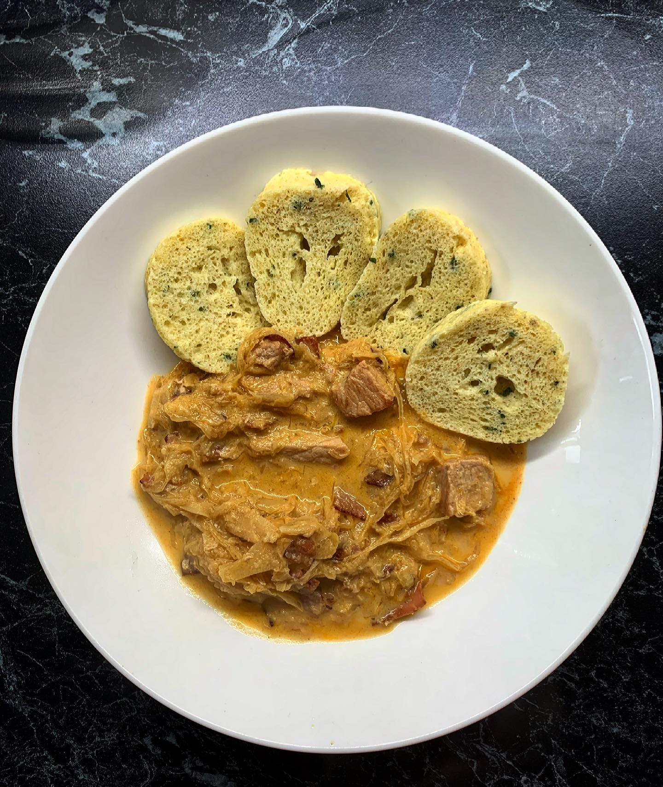

Segedínsky guláš podľa @obzerstveni — Normy Jedál
Segedín a lučinové knedlíky 😍
.
Segedín - osmahnout si slaninu, poté ve výpeku ze slaniny vepřové maso, jakmile je pěkně opečené, přidám k němu tu vypečenou slaninu a cibuli, jakmile se zabarvi cibulka, zasypu mletou paprikou, promíchnu a poté zaliju vývarem. Vařím dokud nezměkne maso (cca 1-1,5hod). Poté přidám kyselé zelí a zahustím - zahušťuji nahrubo nastrouhanou, na cibulce opečenou, poté do měkka podušenou kedlubnou, kterou rozmixuji a jednoduše přimíchám do omáčky. Nakonec naliji půl smetany ke šlehání a dílo je hotovo 💁🏼♀️🤤
.
Lučinový knedlík - 100g lučiny, 2 vajíčka, 10g psylia, sůl, lžička sušeného droždí a pažitka - vařím v máslem vymázlém hrnečku 3 minuty v mikrovlnce
.
.
.
#food #foodphotography #foodlover #foodstagram #foodporn #lunch #lunchtime #porkbelly #cabbage #roastedpork #meat #segedin #segedinskygulas #knedliky #lchf #meatlover #jidlo #jidlonaprvnimmiste #jidlojelaska #obzerstveni #yummy #yummyinmytummy #mnam